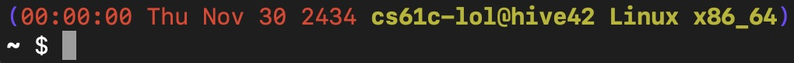

Lab 0: Intro, Setup
Deadline: Tuesday, September 3, 11:59:59 PM PT
Hello! Welcome to CS61C! We're excited to have you on board :D Please pay attention as we demonstrate the safety features of this aircraft. This lab may be a little long, but please read carefully; it covers many important things that will prepare you for the rest of the course!
Info: You may make private questions on Ed for this assignment if you run into issues. This is an exception to the normal policy because this lab is mostly setup.
We also have a list of common errors. Please check it out before posting on Ed or coming to office hours!
Exercise 1: Accessing Services
Unfortunately, assignments in this course do require some (sometimes boring) setup. Let's get that out of the way before the semester kicks in. Here's a checklist:
-
- If you're not able to view it, go to https://youtube.com/channel_switcher and click on your Berkeley account's YouTube channel (you may have multiple).
Accessing Gradar
Gradar is a new service under development. Please let us know if you run into any issues by making a private question on Ed!
- Go to Gradar and log in with your Berkeley Google account.
- On the home screen, confirm that you can see the
CS 61C Fall 2024course. - At the top right corner, click your name, then click
Profile. - Under "GitHub: Login", click
Link Accountand log in with the GitHub account you'd like to use for 61C.
Note: Campus VPN
Unfortunately, some regions and organizations block access to our educational materials and tools. If you're unable to access any services or resources due to internet access restrictions, you can use the Berkeley campus VPN (which you will install later on in this lab).
Exercise 2: Installing Software
The following sub-sections contain instructions for specific OSes (operating systems). Please use the instructions for your specific OS; commands for the wrong OS may break things on your OS!
Ubuntu Linux
Ubuntu 18.04+ has the required programs in the default APT repositories. The following commands will install them automatically:
Any terminal and any modern web browser should be sufficient for 61C.
macOS
-
- We recommend the
.pkginstaller. - If you have an Apple Silicon CPU, you want the
aarch64version. Otherwise, you probably have an Intel/AMD CPU, so you want thex64version.
- We recommend the
- If nothing is printed, your install should be OK
- If a certificate error is thrown (e.g.
certificate verify failed: unable to get local issuer certificate):- In Finder, open your system Applications folder
- Open the Python install folder (e.g.
Python 3.11) - Run the
Install Certificates.commandprogram inside (right-click => Open) - Close your existing terminal windows and open a new terminal
- Run the
python3SSL check command again
Windows
-
- If asked by the installer, select the
"Use Windows' default console window"option instead of"Use MinTTY"
- If asked by the installer, select the
-
- For 61C, please use Git Bash instead of
cmd.exeor Powershell
- For 61C, please use Git Bash instead of
-
- We recommend the
.msiinstaller.
- We recommend the
If it launches the Microsoft store, Python may not be installed.
Other OSes
If you're using another Linux distribution (Alpine/Arch/Asahi/Debian/Fedora/NixOS/etc.), most of our programs should run fine when dependencies are present, but we don't have resources to test on distros other than Ubuntu. If you're having trouble, you can try reaching out on Ed or visit OH, but please note that staff has limited experience with these.
If you use *BSD, HaikuOS, TempleOS, ToaruOS, or anything else, we unfortunately don't have the resources to support these platforms. If programs don't work, you can use the instructional computers (or other supported platforms).
Exercise 3: Instructional Accounts and Servers (hive machines!)
Note: Historically, 61C has used the hive machines, but during Fall 2024, those machines are being repaired, so we won't have access to them until later in the semester.
For the remainder of the semester (unless specified otherwise), the keyword "hive" refers to the s275 machines.
The hive machines are instructional servers that you will use for coursework. You can connect to these machines using SSH (Secure SHell Protocol). Let's set that up!
You can use Hivemind to check if each hive machine is busy or offline. You are only able to see the state of 8 of the login servers (ashby, cedar, cory, derby, gilman, hearst, oxford, solano) using Hivemind, and cannot look at the state of the s275 machines.
Warning: The CalVisitor WiFi network on campus blocks SSH. Make sure you're not on CalVisitor when working on 61C things.
Campus VPN Setup
Follow the instructions here to install and set up the bSecure Remote Access VPN. Make sure there are no errors during your installation process. We will refer to this VPN as "the campus VPN" from now onwards.
Please stay connected to the Campus VPN for the remainder of this lab.
This is our first semester using this, so if you run into any issues, please make a follow-up in the Lab 0 Ed post or make a private question on Ed.
Instructional Account Setup
-
- You'll need your password for the rest of this exercise.
- It may take a day or two after you're enrolled/waitlisted before you're able to create an account.
- If you're a pending concurrent enrollment student, or filled out the "Plan to Enroll Later" form, we're requesting accounts for you and you should be able to create an account within 5 days of submitting your application or the form.
-
Remember to replace
cs61c-???with your instructional account username. When typing your password, nothing will appear; this is normal for many terminal programs.- If you get
Permission denied, please try again, check that you're typing the correct username/password. If you're copy-pasting the password, try typing it out manually. - If you're getting "
Connection timeout" or other connection errors, make sure you're not on CalVisitor or another network that blocks SSH, and make sure you're connected to the campus VPN. - If you're getting "
Connection refused" or "Connection timeout" or other connection errors, the machine might be temporarily down or refusing connections. Try another hive machine to use (e.g. replaces275-1withs275-2).
- If you get
-
- Please enter your Berkeley email.
- Please double check the spelling of your email, SID, and name.
-
If something is incorrect, run:
-

If your prompt is white, run:
&&Then, start from step 2 again.
Connecting to Hive Machines With a Shortcut
We can configure a SSH host alias, which will let us use ssh s275-# instead of ssh cs61c-???@s275-#.cs.berkeley.edu.
This section will also introduce you to Vim, a terminal-based text editor.
If you still need to use your 61B setup, reach out to 61C course staff.Host *.cs.berkeley.edu *.eecs.berkeley.edu IdentityFile ~/.ssh/cs61b_id_rsa
Remember to replace# Begin CS61C hive machine config v2.0.2 Host ashby cedar cory derby gilman hearst oxford solano s275-? s275-?? hive? hive?? HostName %h.cs.berkeley.edu Match Host *.cs.berkeley.edu,*.eecs.berkeley.edu Port 22 User cs61c-??? ServerAliveInterval 60 # End CS61C hive machine config v2.0.2cs61c-???with your instructional account username. Leave the question marks inHost s275-? s275-?? hive? hive??as-is.
In the future, you can run ssh s275-# to connect to a hive machine. There are 25 hive machines, s275-1 through s275-25; it doesn't matter which one you use since all of them share the same files.
Connecting to Hive Machines Without a Password
Make note of the location of your SSH key, it will be used later in the lab.|
You should see that red-yellow prompt without being prompted for your instructional account password.
If you're getting tired of reading, try taking a short break; anyone want a game of snake?
Exercise 4: GitHub Setup
Configuring Your Local Machine
Let's configure your local user account to authenticate to GitHub using your SSH key.
It should look similar to the following (length may differ):ssh-ed25519 AAAAC3NzaC1lZDI1N6jpH3Bnbebi7Xz7wMr20LxZCKi3U8UQTE5AAAAIBTc2HwlbOi8T some_comment_here-
- Set the title to something that helps you remember what device the key is on (e.g.
CS61C Laptop).
- Set the title to something that helps you remember what device the key is on (e.g.
If all went well, you should see something like:Hi USERNAME! You've successfully authenticated, but GitHub does not provide shell access.
In the future, when cloning repos that require authentication (e.g. the private labs repo you'll create next), instead of using the HTTPS repo URL (like https://github.com/USERNAME/REPO_NAME.git), you should use the SSH repo URL instead (like git@github.com:USERNAME/REPO_NAME.git). For example, in https://github.com/61c-student/fa24-lab-ghost.git, the repo named fa24-lab-ghost is under the 61c-student user/organization, so the SSH clone URL would be git@github.com:61c-student/fa24-lab-ghost.git.
Configuring Your Instructional Account
Let's configure your instructional account to authenticate to GitHub using your SSH key.
Again, you should see that red-yellow prompt.
Make note of the location of your SSH key, it will be used later in the lab.|
It should look similar to the following (length may differ):ssh-ed25519 AAAAC3NzaC1lZDI1N6jpH3Bnbebi7Xz7wMr20LxZCKi3U8UQTE5AAAAIBTc2HwlbOi8T your_email@example.com-
- Set the title to something that helps you remember that this key is on your instructional account (e.g.
CS61C Hive).
- Set the title to something that helps you remember that this key is on your instructional account (e.g.
If all went well, you should see something like:Hi USERNAME! You've successfully authenticated, but GitHub does not provide shell access.
Exercise 5: Fun with Git
In this exercise, you'll get your Git repository ("repo") for labs and work with a variety of Git commands.
The instructions for this exercise assume you're using Vim to edit text files. For a quick start guide on vim, check out the Vim Basics section of the Appendix.
If you want to use another text editor, go ahead. However, staff will not be able to provide support for editors other than vim. Some examples:
- Nano: simple and beginner-friendly compared to Vim. It provides a helpful list of commands at the bottom of the interface (the ^ means the Ctrl key). Ships with many UNIX distributions (e.g. macOS, Ubuntu Linux). Open with
nano file.txt. - Visual Studio Code (VSCode): fancy graphical text editor. It has some pretty helpful extensions, including a Remote SSH extension that allows you to edit files over SSH in VSCode itself instead of a terminal-based editor. However, some students have ran into complicated setup issues in the past.
Before you come to lab 1, make sure that you are comfortable with either editing your files on the hive by using your text editor of choice.
Getting Your Lab Repo
Visit Gradar, start the assignment named Labs, and create a repo. This will be your personal repo for any lab work you do throughout the semester.
Configuring Git
Before we start, let's tell Git who you are. This information will be used to sign and log your commits. You may not need to do this on your local machine if you've set up Git before, but you'll need to do this on your instructional account.
On your local machine, tell Git your name and email:
SSH to a hive machine, and run the same commands on your instructional account.
Cloning Your Repo
Git has the concept of "local" and "remote" repositories. A local repo is located wherever your terminal session is; if you're in an SSH session, the local repo is a folder on a hive machine; if your terminal session is on your local machine, the local repo is located on your local machine's filesystem. A remote repo (e.g. GitHub repo) is typically hosted on the Internet.
You have a lab repository on GitHub, but not locally (it would be a little worrying if a website could automatically access your local files). To get a local copy of this repository, you can use git clone, which will create a local repository based on information from a remote repo.
SSH into a hive machine. On the hive machine, clone the repository into a folder named labs:
Remember to replace fa24-lab-USERNAME with your actual repo name!
Exploring Your Repo: Git
cd into this new folder. List all hidden files (ls -a). Do you see a hidden file/folder?
There is indeed a folder named .git. Its presence indicates that the current folder (folder containing .git) holds a Git repository.
Take a look at your repo's current remotes and status:
git clone has already worked a bit of magic here -- there's a remote called origin, and its URL points to your labs repo on GitHub! You're on a local branch called main, which is "tracking" origin/main (the main branch on the origin remote).
Note: GitHub now uses main as the default branch name, not master
Throughout the semester, course staff may make updates to starter code to fix bugs or release new labs. To receive these updates, you'll need to add another remote.
Note: Our starter repos are public, and you don't have write access to them, so you should actually use the unauthenticated HTTPS clone URL in this case!
If you ever want to pull updated starter code, you'd execute the following command:
Try it out now! Since you just started lab, there might not be any updates to pull yet.
Exploring Your Repo: Files
Your labs repo structure looks like:
labs/ (current directory)
lab00/
code.py
gen-debug.sh
get-ssh-key.sh
init.sh
tools/
download_tools.sh
README.md
Starting from the labs repo, run ls. The output should look like:
~/labs $ ls
lab00 README.md tools
Now, cd into the lab00 folder, then list its files. The output should now look like:
~/labs/lab00 $ ls
code.py gen-debug.sh get-ssh-key.sh init.sh
In paths, . by itself refers to the current directory. The following commands will list the files present in the lab00 folder:
~/labs/lab00 $ ls
~/labs/lab00 $ ls .
~/labs/lab00 $ ls ./././.
How do you get back to the overall labs folder? In paths, .. by itself refers to the parent folder.
~/labs/lab00 $ ls ..
lab00 tools
~/labs/lab00 $ ls ../..
<whatever's in your home folder, probably many files>
~/labs/lab00 $ cd ..
~/labs $ ls
lab00 tools
The following sequences of commands will all list the files in lab00:
~/labs $ cd lab00
~/labs/lab00 $ ls
~/labs $ ls lab00
~/labs $ cd tools
~/labs/tools $ ls ../lab00
~/labs $ cd lab00
~/labs/lab00 $ ls ../lab00/../lab00/../lab00
Try experimenting a bit!
Fizzing and Buzzing
If you started working on other labs, make sure to copy your work somewhere else before starting this exercise, since your work may be overwritten in this exercise.
-
cdinto thelab00folder in your repo, and take a look at the files present (ls). Then, run the following command to initialize the lab:Make sure that no errors are printed.
-
Use Vim to open up
code.pyand look through thefizzbuzz(num)function. It should:- Print
"num: fizz"if num is a multiple of 3 - Print
"num: buzz"if num is a multiple of 5 - Print
"num: fizzbuzz"if num is a multiple of 3 and 5 - Print nothing if the num is not a multiple of 3 or 5
However, if you run the program (
python3 code.py), that doesn't seem to happen! Try to fix this bug by only editing theifstatements. After fixing the code, save, add, and commit your work usinggit addandgit commit.In many environments,
git commitwill open up Vim for editing the commit message. If you're confused on how to use it, check out the Vim Basics section of the Appendix. - Print
-
After committing your fix, push your work.
Or at least, try to push your work. You should encounter an error:
! [rejected] main -> main (non-fast-forward) error: failed to push some refs to 'github.com:61c-student/fa24-lab-username.git' hint: Updates were rejected because the tip of your current branch is behind hint: its remote counterpart. Integrate the remote changes (e.g. hint: 'git pull ...') before pushing again. hint: See the 'Note about fast-forwards' in 'git push --help' for details.If you didn't encounter an error, try starting from step 1 again, or contact course staff if it keeps happening.
Throughout the semester, you'll probably run into many strange errors. It helps to break them down into smaller chunks, and see if you can find out what each chunk is saying. As an example, let's break that down:
"failed to push some refs to REPO_URL": the push failed"the tip of your current branch is behind its remote counterpart": the remote repo (on GitHub) has commits that your local repo doesn't"Integrate the remote changes (e.g. 'git pull ...') before pushing again": we need to tell Git how to integrate the mysterious commits
Try pulling the remote changes with
git pull.- If you get a
"fatal: Need to specify how to reconcile divergent branches.", rungit config --global pull.rebase false, then try pulling again - If you get a
"fatal: Not possible to fast-forward, aborting", trygit pull --ff - If you get a
"fatal: Need to specify how to reconcile diverent branches", trygit pull --ff
If everything went well, you should encounter another error:
Auto-merging lab00/code.py CONFLICT (content): Merge conflict in lab00/code.py Automatic merge failed; fix conflicts and then commit the result.Uh oh, a merge conflict:
"Merge conflict in lab00/code.py": both the remote repo and local repo have commits that made changes tolab00/code.py"Automatic merge failed": Git tried to figure out how to integrate the commits, but couldn't"fix conflicts and then commit the result": Looks like we need to manually resolve the merge conflict!
You can check
git status:On branch main Your branch and 'origin/main' have diverged, and have 1 and 1 different commits each, respectively. (use "git pull" to merge the remote branch into yours) You have unmerged paths. (fix conflicts and run "git commit") (use "git merge --abort" to abort the merge) Unmerged paths: (use "git add <file>..." to mark resolution) both modified: code.pyOpen the conflicted file in Vim. You should see something like:
<<< === >>> --It looks like your imaginary partner, Oski, also tried to fix the bug, without telling you. Dangit Oski! Oski's code seems rather... inefficient, so you want to keep your fix. However, Oski did do something useful: there's another
ifcase, so multiples of 15 will print 1 line with "fizzbuzz" rather than 2 lines with "fizz" and "buzz". In other words, Oski and you have both made changes you would like to keep!Now, with that in mind, fix the
fizzbuzz(num)function by integrating both versions into one, and then removing extra merge conflict markers (<<< HEAD,===,>>> commit-hash). The fixed function should look something like the following pseudocode:# print num: fizzbuzz # print num: fizz # print num: buzzWhen you're done, save, add, and commit your work. Now, if you push, there shouldn't be a conflict anymore. One merge conflict defeated!
-
On your local machine (NOT on your instructional account over SSH), clone your labs repo (remember to clone via SSH as demonstrated above, not HTTPS), and
cdinto thelab00folder. Then, run the following command:This creates a file named
debug.txtthat records a bit of debugging information for the autograder. Add, commit, and push this file. -
Still on your local machine,
cdinto thetoolsfolder in your labs repo. Then, run the following command:If you see warnings about
Illegal date format for -zorDisabling time condition, that is expected behavior.This downloads Logisim and Venus, which we'll need later. Check that Logisim runs:
If a window pops up, it works! Feel free to close it; you won't need it for a while.
Submission
You made it! That was quite a bit of reading and head-scratching, but you're now somewhat more familiar with the tools you'll be using for the rest of the semester. Worth it!
Every lab will have autograded exercise(s). To submit to the autograder, you'll need to push your work to your lab repository on GitHub. Then go to the corresponding assignment on Gradescope (Lab 0 for this lab), select your lab repository, and submit. After a short wait, the page should show your autograder score for the lab.
Remember, to get credit for a lab, make sure you have finished all the exercises and passed all the autograder tests by the deadline!
Appendix
These are some tools you may find helpful, but are by no means required for this course :)
Vim Basics
vim is a text editor included on the hive machines and many UNIX-based distributions.
Note: We'll be using Vim in most of our examples and documentation, but we have no hard requirement on which text editor you use; you're welcome to pick whatever you're comfortable with, but you should know how to use at least one terminal-based text editor.
To open a file from your current directory, pass the file name to Vim:
To open a file from another directory, use a relative or absolute path:
Some useful Vim commands:
| Command | Explanation |
|---|---|
Esc :q | Closes (quits) Vim without saving |
Esc :wq | Closes Vim after saving |
Esc :w | Saves your file |
Esc :q! | Force-quit Vim (for when you've made changes but do not wish to save them) |
Esc i | Insert mode, allows you to type into the file |
Esc /cats | Searches your file for the nearest occurrence of the string "cats". Press n to go to the next occurrence or N to go to the previous |
Esc :set nu | Shows line numbers within your file |
Esc :tabe <filepath> | Opens the file at filepath in a new tab. You can use Tab for autocompletion |
Esc :tabn | Go to the next tab in the tab bar |
Esc :tabp | Go to the previous tab in the tab bar |
Note: these commands are preceded by Esc because you'll need to press the escape key on your
keyboard to switch you out of your current mode. For example, if I'm inserting (typing) into a file
and want to save, I'd have to hit Esc to get out of insert mode, then type :w to save my
file. If you aren't in a mode (i.e. you've just opened your file) you don't need to hit escape
first, but it won't hurt :)
By default, Vim doesn't enable mouse support or line numbers. If you want these:
- Open up
~/.vimrc(vim ~/.vimrc) - To enable your mouse, add a new line containing
set mouse=a - To enable line numbers, add a new line containing
set number - Save and quit. Try opening your vimrc file again
Vim has many more configuration options available -- feel free to experiment with Vim resources you find online!
We also have a Vim for CS61C guide that you can reference. Thanks Yijie!
Command Line Essentials
If you took CS61A and CS61B, you likely have some experience with a command line interface (CLI) and terminal commands. We'll be using the CLI a lot in this course, so let's take a moment to review some of the basics.
Example commands will be formatted like:
In this case, echo is the command, and Hello and world are arguments. Typing that line in your terminal will run the command. In this case, it just prints Hello world to your terminal.
Flags are commonly used to specify program options or alter behavior. They usually begin with one or two dashes, and can optionally take an argument.
|
It's generally recommended to wrap strings that should be a single argument in single quotation marks (e.g. 'longer string with *&)_@#(&$! symbols'), or you may run into unintended behavior -- many of those symbols actually do something if left unquoted/unescaped!
You may find it helpful to review 61B's list of common CLI commands.
CLI Keyboard Shortcuts
When typing commands or file paths:
- Tab will try autocomplete the current term based on what you wrote so far
- If the current directory has
filename1.txtandfilename2.txt, f Tab 1 Tab will result infilenameafter the first tab, andfilename1.txtafter you type1and the second tab
- If the current directory has
- Up Arrow and Down Arrow will allow you to move through commands you've used previously, so you don't need to type them again.
- Ctrl + a will move the cursor to the beginning of the current line (helpful for fixing mistakes)
- Ctrl + e will move the cursor to the end of the current line (also helpful for fixing mistakes)
- Ctrl + r will let you search through your recently used commands
Hello World
echo repeats whatever arguments you give it:
If your string has special characters, surrounding it in single/double-quotes avoids triggering unintended shell features:
Working With Files
touch will create a blank file with the file name you provided.
This will create a file named example.txt with nothing inside.
If you'd like to create a file and add text in one go, you can use:
This will create a file with the name example.txt in your current directory. If the file already exists, it will be overwritten. The file will contain Your contents here, without the quotation marks. The > symbol takes one argument which redirects where data printed to stdout is sent. Here, we are redirecting the output of echo to a file named example.txt.
You can view the contents of a file with the cat or less commands.
cat print the contents of example.txt to your terminal. less opens a basic viewer which allows you to scroll and search.
scp - "Secure Copy"
The scp program is used for copying files between computers using the SSH protocol.
Sometimes, you may want to get individual files or entire folders from the hive machines onto your
local system, or vice versa. You can do this by using scp:
To specify a remote source or destination, use username@host:path. To specify a local destination,
just use path. As an example:
Assuming my username is cs61c-???, the above command would connect to s275-1 and copy
~/some-folder/example.txt on my instructional account to ~/Downloads/example.txt on my local
machine.
If I wanted to copy the other direction (from my local machine to a hive machine) I would use:
scp by default only works with files. To copy folders, you need to tell scp to "recursively" copy
the folder and all its contents, which you can do with the -r flag:
Pay attention to the slashes: writing some-folder will copy the folder itself and files inside, while some-folder/ will only copy the files inside.
Warning: Running scp on the hive machines (e.g. when you're in a SSH session) is usually not desired behavior. Running scp example.txt s275-4:~/example.txt on a hive machine will copy example.txt to... the same place. You probably want to run it in a local terminal session!